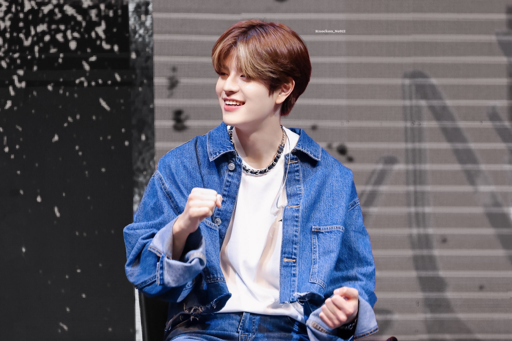

CANCIONES


Kim Seung-min (Seúl, 22 de septiembre de 2000), más conocido como Seungmin (승민), es un cantante y bailarín surcoreano. Es popularmente conocido por ser miembro del grupo Stray Kids.
Seungmin nació el 22 de septiembre de 2000 en Seúl, Corea del Sur. Además de sus padres, tiene una hermana mayor. Su abuelo fue lanzador en el instituto, e inspirado por su ejemplo quiso convertirse en jugador de béisbol. Cuando tenía 9 años, fue fotografiado realizando el primer lanzamiento ceremonial en un partido de los SK Wyverns.
Pero debido al deterioro de la situación económica de la familia, tuvo que abandonar su sueño. Seungmin empezó a interesarse activamente por la música cuando estaba en cuarto grado, donde participó en un concurso de poesía infantil y cantó en un coro.Durante varios meses vivió en Estados Unidos con su familia y estudió en una escuela de Los Ángeles durante algún tiempo. Tras regresar a su país natal, estudió en la Escuela Secundaria de Cheongdam, donde se graduó en febrero de 2019.
CANCIONES |
|||
|
|||
|  | |||
|
|
||